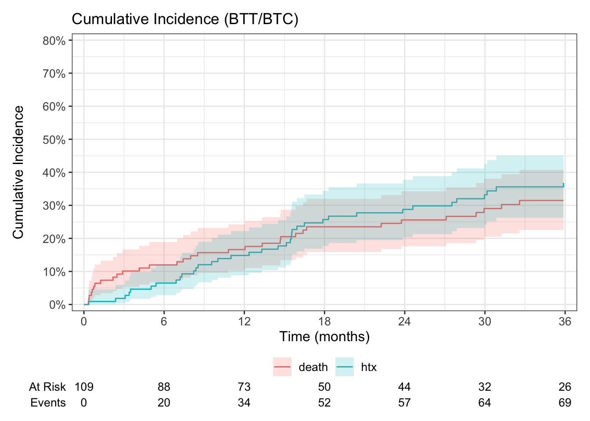
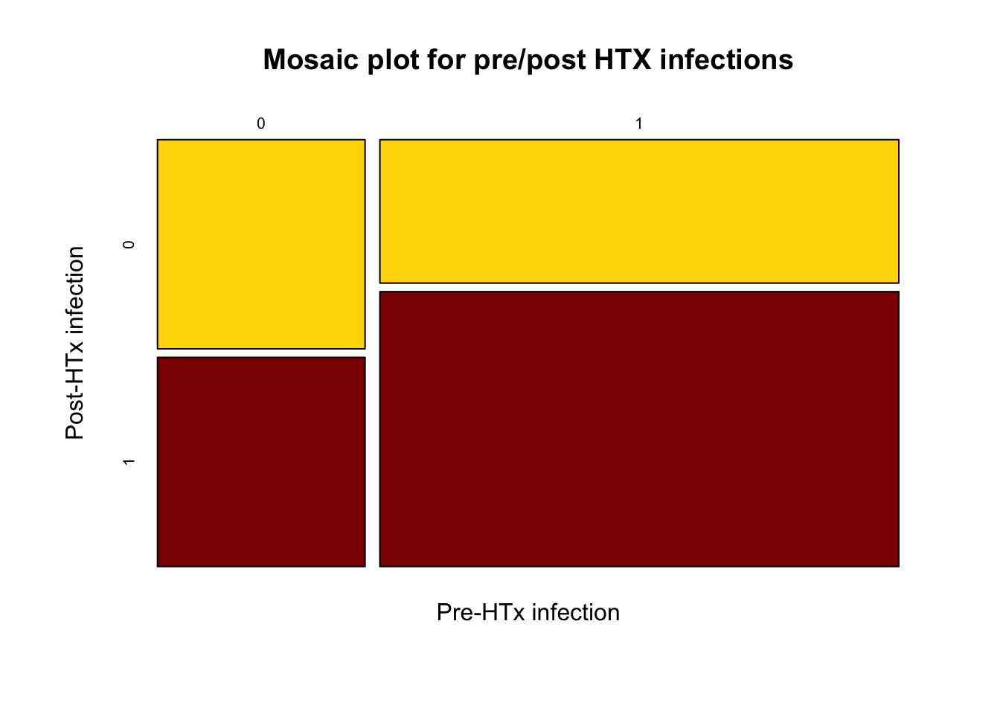
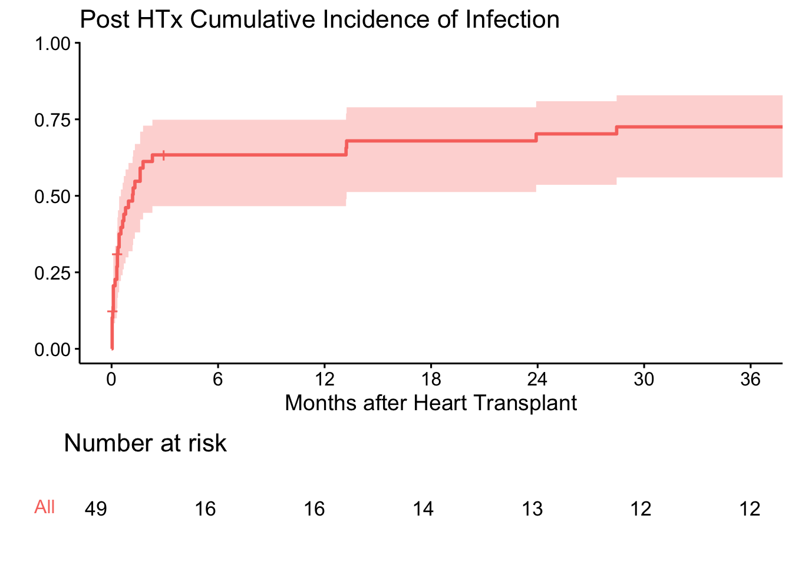
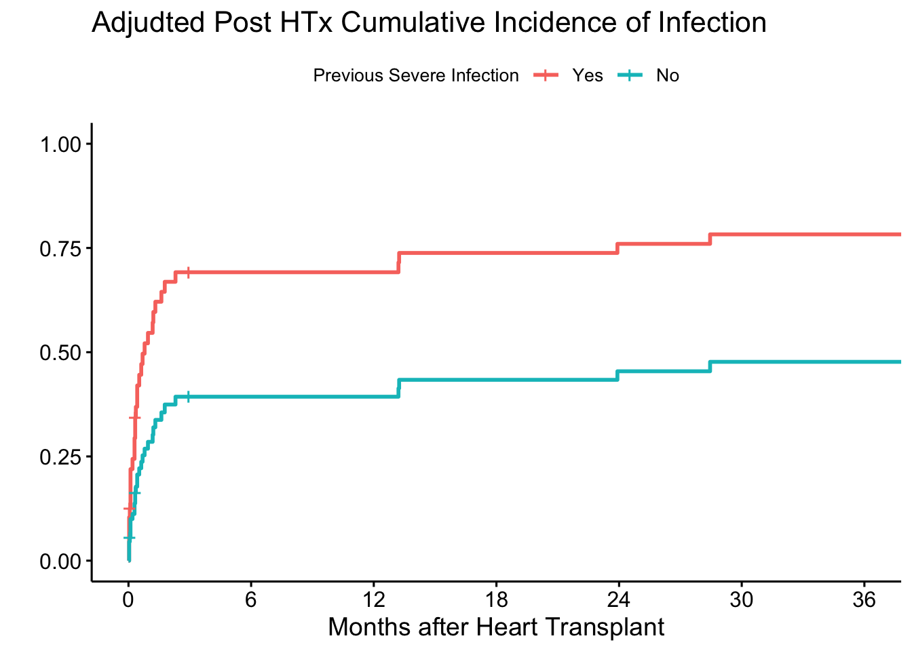
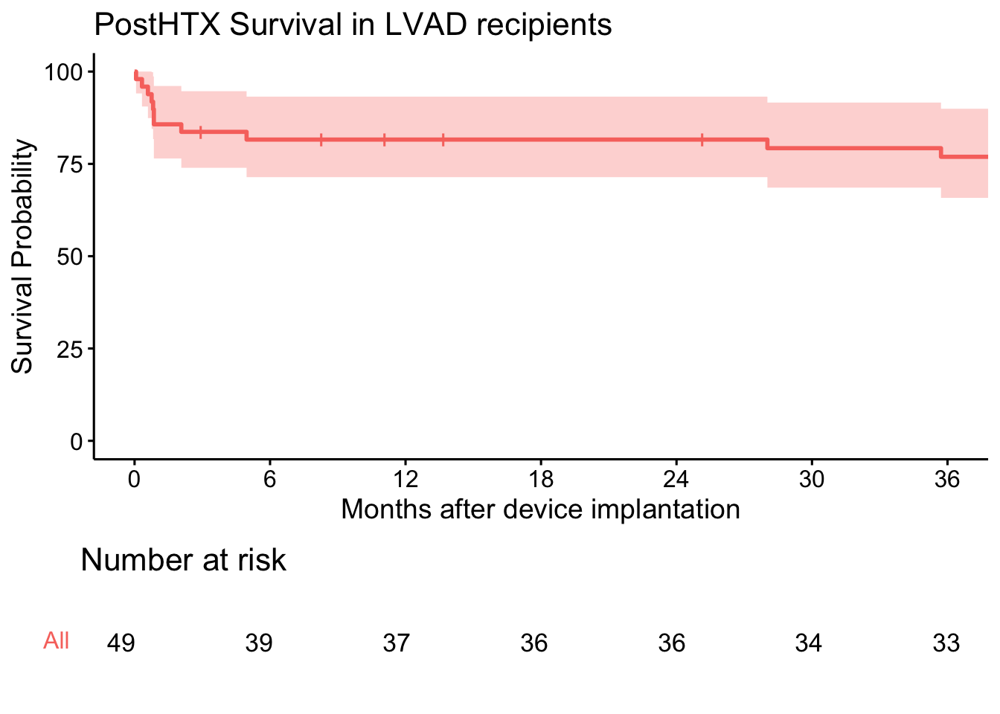
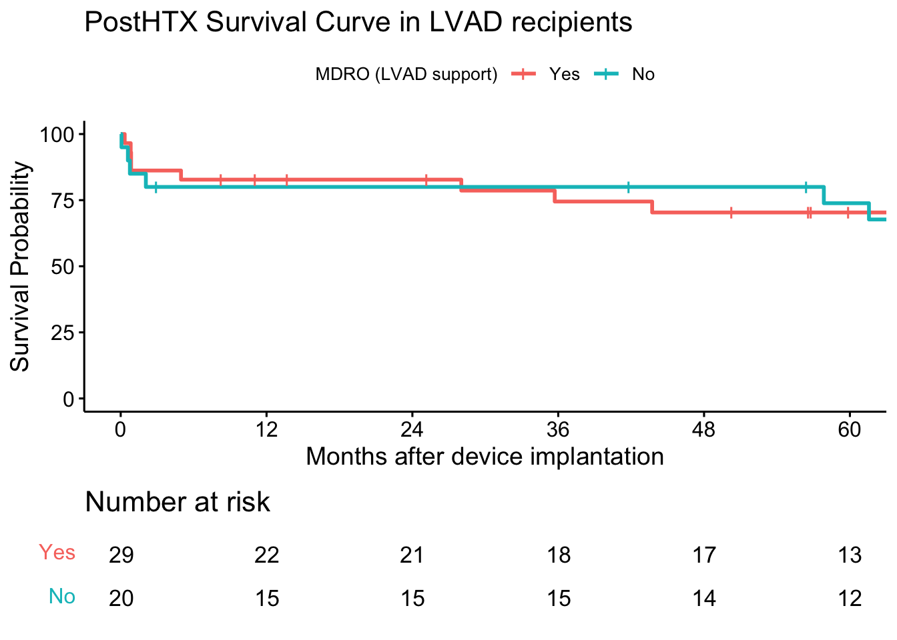

ESITI POST-TRAPIANTO NEI PAZIENTI CON LVAD: RUOLO DELLE INFEZIONI PREOPERATORIE E SOPRAVVIVENZA A LUNGO TERMINE
ABSTRACT
INTRODUZIONE
Il supporto con dispositivo di assistenza ventricolare sinistra (LVAD) rappresenta un’efficace strategia ponte al trapianto cardiaco (HTx). Tuttavia, la presenza di infezioni preoperatorie può incidere negativamente sugli esiti post-trapianto.
METODOLOGIA
E’ stata condotta un’analisi retrospettiva su 49 pazienti portatori di LVAD trapiantati tra il 2010 e il 2024. Per ciascun paziente sono state raccolte le caratteristiche cliniche, il motivo dell’urgenza al trapianto, la presenza e la tipologia di infezioni prima e dopo HTx, e la sopravvivenza post-trapianto a 36 mesi.
RISULTATI
L’età media al trapianto era di 52 anni (91% maschi); il tempo mediano di supporto con LVAD era di 24 mesi. Il 98% dei trapianti è avvenuto in urgenza, nel 62% dei casi per infezione. La sopravvivenza a 6, 12 e 24 mesi post-HTx era dell’83%, con una lieve riduzione al 78% a 36 mesi. In epoca post-trapianto sono stati registrati numerosi episodi infettivi, in particolare batteriemie secondarie (spesso correlate a CLABSI o infezioni di ferita chirurgica) e polmoniti. I microrganismi prevalenti erano P. aeruginosa, E. coli e S. aureus, con una significativa presenza di ceppi multiresistenti. La storia di infezione pre-HTx correlata a LVAD si associava a una maggiore incidenza di complicanze infettive post-trapianto.
CONCLUSIONI
Il trapianto cardiaco nei pazienti con LVAD è fattibile anche in presenza di infezioni, con buoni risultati di sopravvivenza. Tuttavia, l’elevato burden infettivo pre-HTx rappresenta un fattore di rischio per complicanze post-operatorie, richiedendo strategie personalizzate di gestione antimicrobica e timing ottimale del trapianto.
POST HEART TRANSPLANT OUTCOMES IN LVAD SUPPORTED PATIENTS: ROLE OF PREOPERATIVE INFECTIONS AND LONG-TERM SURVIVAL
INTRODUCTION
Durable left ventricular assist devices (LVADs) are widely used as bridge-to-transplant (BTT) therapy in advanced heart failure. Despite improvements in device design and management, infection remains one of the most frequent LVAD-related complications, contributing substantially to morbidity and hospital utilization during support1,2. Infections are now classified using the updated 2024 International Society for Heart and Lung Transplantation (ISHLT) criteria as device-specific (e.g., driveline, pump, or pocket), device-related (e.g., bloodstream infection [BSI] attributable to the device), or non-device infections, aiming at a greater consistency across studies3. The implications of pre-transplant infection in the LVAD population remain debated. Historically, earlier registry and meta-analytic data suggested that pre-HT infections, particularly when device-related, were associated with increased post-transplant mortality4. However, those analyses were limited by heterogeneous definitions and older-generation devices. More contemporary reports from single-center cohorts using continuous-flow LVADs have challenged this view, showing that patients with prior LVAD infections—particularly isolated driveline infections that were controlled or placed on suppressive therapy—did not experience higher rates of post-HT infection, rejection, or mortality compared with patients without infection5,6. In contrast, the presence of active LVAD-specific infection at the time of transplant has been associated with greater early post-transplant infectious morbidity, although without consistent impact on survival7,8. Duration of LVAD support has also been examined as a potential determinant of post-transplant outcomes. While prolonged support may co-travel with increased exposure to hospitalizations, transfusions, and infection risk, multiple contemporary series have demonstrated that time on device itself is not an independent predictor of post-transplant morbidity or mortality9. Instead, outcomes appear to be driven more by the phenotype and severity of illness during LVAD support—notably the presence of severe device-related secondary bacteremias, uncontrolled infection, or complications such as right heart failure10,11. The present study therefore aims to evaluate whether (1) a history of LVAD infection prior to transplant confers greater risk of infection right after heart transplantation compared to those without prior infection, and (2) whether LVAD support characteristics — including duration of support and severity of prior infection — are associated with long term risk of post-transplant infection or mortality.
MATERIALS AND METHODS
Following approval from the institutional ethics committee, we retrospectively analyzed all LVAD procedures performed and any subsequent heart transplant at […] between January 2010 and December 2024. Clinical information was retrieved from electronic medical records, including demographic variables (age, sex, body mass index), underlying cardiac diagnosis, history of ventricular assist device (VAD) support, and details of infection during LVAD support (site and pathogen). Additional data encompassed transplant date, occurrence and microbiology of post-transplant infections, hospital length of stay (LOS), and long-term survival. Patients younger than 18 years were excluded. Follow-up data was collected continuously and censored on April 30th, 2025. The primary endpoint was the relative risk of early post-transplant infections among recipients receiving active antimicrobial therapy in the 90 days before HTx. Secondary endpoints were the cumulative incidence of infection and survival up to three years after heart transplantation considering the overall cohort.
Definition of severe infection
Severe infection was defined as primary or secondary bloodstream infection (bacteremia), pneumonia, mediastinitis or osteomyelitis, and endocarditis. These infections were considered clinically significant due to their systemic involvement and potential impact on post-LVAD and post-transplant outcomes.
Statistical analysis
Categorical variables were presented as proportions and continuous variables were represented as the mean ± standard deviation. Clinical and demographic values were compared using the χ2 test or Fisher’s exact test for categorical variables and the Wilcoxon rank-sum test for continuous variables. Relative risk (RR) and Fisher’s exact test were used to assess whether patients infected in the 90 days before transplant were more likely to develop infection in the subsequent 90 days compared to those without prior infection. Time-to-event analyses were performed using Kaplan–Meier estimation to assess post-transplant cumulative incidence of infection and overall survival up to three years. Multivariable Cox proportional hazards models were used to evaluate the impact of clinically relevant comorbidities (diabetes,renal insufficiency), duration of LVAD support and history of severe infections on secondary outcomes. Time zero was defined as the date of transplant, with follow-up censored at death or the last clinic visit. A two-sided p-value ≤ 0.05 was considered statistically significant. All analyses and figure preparation were conducted with R software (version 4.3.3 or later).
RESULTS
Clinical features of transplant recipients
In bridge-to-transplant (BTT) LVAD populations, patients may either undergo heart transplantation or experience death over time, with the cumulative incidence of both events steadily increasing. In our cohort, these rates reached 37% for transplantation and 31% for death by 36 months post-implant (Figure 1).
Among 49 patients who underwent heart transplantation during the study period, 45 (92%) were men, and the mean age at LVAD implantation was 50 years. Devices included HeartMate II (n = 17, 35%), HVAD (n = 16, 33%), and HeartMate 3 (n = 16, 33%). The most common causes of heart failure were ischemic cardiomyopathy (48%) and dilated cardiomyopathy (44%). The mean hospital stay at the time LVAD was implanted was 61 days, and the mean duration of LVAD support was 24 months (Table 1). Patients with a recent history of infection did not differ significantly from those without infections in age, BMI, sex, or device type. Cardiomyopathy etiology and comorbidities were similarly distributed, and LVAD support duration did not differ between the groups. Notably, patients with a recent pre-transplant infection were more likely to have experienced infections with multidrug-resistant microorganisms (MDRO) during LVAD support (p = 0.02).
| Characteristic |
Pre-HTx infection (last 90 days)
|
p-value2 | ||
|---|---|---|---|---|
| Overall N = 491 |
No N = 141 |
Yes N = 351 |
||
| Age at LVAD implantation (years) | 50 (9) | 52 (8) | 49 (9) | 0.34 |
| Sex | 0.57 | |||
| Male | 45 (92%) | 12 (86%) | 33 (94%) | |
| Female | 4 (8.2%) | 2 (14%) | 2 (5.7%) | |
| BMI | 25.1 (3.9) | 25.1 (2.9) | 25.1 (4.3) | 0.71 |
| LVAD Device | 0.24 | |||
| HeartMate 2 | 17 (35%) | 6 (43%) | 11 (31%) | |
| HeartWare HVAD | 16 (33%) | 2 (14%) | 14 (40%) | |
| HeartMate 3 | 16 (33%) | 6 (43%) | 10 (29%) | |
| Cardiomyopathy aethiology | 0.49 | |||
| Ischemic | 23 (48%) | 7 (50%) | 16 (47%) | |
| DCM | 21 (44%) | 5 (36%) | 16 (47%) | |
| Inflammatory cardiomyopathy | 1 (2.1%) | 1 (7.1%) | 0 (0%) | |
| Hypertrophic Cardiomyopathy | 1 (2.1%) | 0 (0%) | 1 (2.9%) | |
| Radiation-induced cardiomyopathy | 2 (4.2%) | 1 (7.1%) | 1 (2.9%) | |
| Hypertension | 6 (12%) | 1 (7.1%) | 5 (14%) | 0.66 |
| Dyslipidaemia | 11 (22%) | 3 (21%) | 8 (23%) | >0.99 |
| Diabetes (type 1 or type 2) | 5 (10%) | 0 (0%) | 5 (14%) | 0.30 |
| Renal insufficiency | 10 (21%) | 4 (31%) | 6 (17%) | 0.43 |
| History of smoking | 19 (39%) | 6 (43%) | 13 (37%) | 0.71 |
| Alcohol or drug abuse | 4 (9.8%) | 0 (0%) | 4 (13%) | 0.56 |
| Coronary artery disease | 25 (52%) | 8 (57%) | 17 (50%) | 0.65 |
| Arrhytmia | 27 (55%) | 9 (64%) | 18 (51%) | 0.41 |
| Valce repair/replace | 8 (17%) | 3 (23%) | 5 (14%) | 0.66 |
| Pacemeker | 43 (88%) | 12 (86%) | 31 (89%) | >0.99 |
| Major previous surgery | 2 (4.1%) | 0 (0%) | 2 (5.7%) | >0.99 |
| LVAD implantation Hospital LoS(days) | 61 (34) | 68 (44) | 58 (30) | 0.67 |
| LVAD support (months) | 24 (20) | 20 (20) | 26 (20) | 0.26 |
| History of MDRO infection during LVAD support | 20 (41%) | 2 (14%) | 18 (51%) | 0.017 |
| LVAD era | >0.99 | |||
| 2008–2019 | 46 (94%) | 13 (93%) | 33 (94%) | |
| 2020–2024 | 3 (6.1%) | 1 (7.1%) | 2 (5.7%) | |
| Urgent transplant | 46 (98%) | 11 (92%) | 35 (100%) | 0.26 |
| Reason for urgency | 0.018 | |||
| Infection | 28 (62%) | 3 (27%) | 25 (74%) | |
| LVAD Dysfunction | 5 (11%) | 2 (18%) | 3 (8.8%) | |
| Other | 12 (27%) | 6 (55%) | 6 (18%) | |
| 1 Mean (SD); n (%) | ||||
| 2 Wilcoxon rank sum test; Fisher’s exact test; Pearson’s Chi-squared test | ||||
Early postoperative infectious risk
Within 90 days after transplantation, 30 subjects developed an infection requiring antibiotic therapy. Twenty-three of these cases occurred in patients with a recent history of pre-transplant infection (Table 2). This corresponded to a higher incidence of post-transplant infection in the pre-transplant infection group (RR = 1.31, 95% CI 0.74–2.34). Although the association did not reach statistical significance (Fisher exact test, p = 0.3), the observed effect size suggests that patients with prior infection remain at increased risk for infectious complications following transplantation.
Post-HTx infection
|
Total | p-value1 | ||
|---|---|---|---|---|
| No | Yes | |||
| Pre-HTx infection | 0.3 | |||
| No | 7 (14%) | 7 (14%) | 14 (29%) | |
| Yes | 12 (24%) | 23 (47%) | 35 (71%) | |
| Total | 19 (39%) | 30 (61%) | 49 (100%) | |
| 1 Fisher’s exact test | ||||

Relative Risk (95% CI) | ||
|---|---|---|
estimate | lower | upper |
1.314286 | 0.7388941 | 2.337746 |
Long term cumulative incidence of infections and mortality
The cumulative incidence of post-transplant infection rose sharply in the first two months (61.2%, 95% CI: 44.4–72.9) and then leveled off, reaching 70–72% at 24–36 months (Figure 3). In multivariable analysis(Table 3), prior severe infection independently predicted post-transplant infection (HR 2.36, p = 0.024). Post-transplant survival was 83.7% (95% CI: 73.9–94.7) at 3 months, remained stable through 24 months (81.6%), and declined to 74.5% (95% CI: 63.0–88.2) at 48 months (Figure 5). Diabetes was an independent predictor of mortality (HR 5.11, p = 0.019,Table 4).
Post-heart transplant cumulative incidence of infection in LVAD recipients

Multivariable Cox PH model (post-HTx infection risk)
Multivariate COX-PH: post HTX infection risk | |
|---|---|
explanatory | HR |
diabetes.factorYes | 1.68 (0.58-4.86, p=0.342) |
renal_insuff.factorYes | 1.65 (0.73-3.70, p=0.226) |
severe.infection.covYes | 2.36 (1.12-4.97, p=0.024) |
lvad.time | 0.99 (0.97-1.01, p=0.342) |
Adjusted post-heart transplant cumulative incidence of infection in LVAD recipients
Curves derived from the adjusted Cox model depict the effect of prior severe infection on post-transplant infection risk. The plot compares two representative patients without diabetes or renal insufficiency: one with a history of severe infection during LVAD support and one without (Figure 4). Patients with prior severe infection exhibited a substantially higher cumulative incidence of post-transplant infection, consistent with the independent effect observed in the multivariable model (HR 2.36, p = 0.024).

Post-heart transplant survival in LVAD recipients

Multivariable Cox PH model (survival)
Multivariate COX-PH: post HTX mortality | |
|---|---|
explanatory | HR |
diabetes.factorYes | 5.11 (1.31-19.95, p=0.019) |
renal_insuff.factorYes | 1.39 (0.38-5.11, p=0.616) |
lvad.time | 0.97 (0.93-1.01, p=0.140) |
severe.infection.covYes | 0.61 (0.21-1.77, p=0.367) |
DISCUSSION
[…]
These findings emphasize the importance of close surveillance and preventive strategies in this subgroup, and highlight the need for confirmation in larger patient populations.
References
1.
Mehra MR, Uriel N, Naka Y, et al. A Fully Magnetically Levitated Left Ventricular Assist Device Final Report. New England Journal of Medicine [Internet]. 2019 Apr 25;380(17):1618–27. Available from: http://dx.doi.org/10.1056/NEJMoa1900486
2.
Nienaber JJC, Kusne S, Riaz T, et al. Clinical Manifestations and Management of Left Ventricular Assist Device-Associated Infections. Clinical Infectious Diseases [Internet]. 2013 Aug 13;57(10):1438–48. Available from: http://dx.doi.org/10.1093/cid/cit536
3.
Aslam S, Cowger J, Shah P, et al. The International Society for Heart and Lung Transplantation (ISHLT): 2024 infection definitions for durable and acute mechanical circulatory support devices. The Journal of Heart and Lung Transplantation [Internet]. 2024 Jul;43(7):1039–50. Available from: http://dx.doi.org/10.1016/j.healun.2024.03.004
4.
Gordon RJ, Quagliarello B, Lowy FD. Ventricular assist device-related infections. The Lancet Infectious Diseases [Internet]. 2006 Jul;6(7):426–37. Available from: http://dx.doi.org/10.1016/S1473-3099(06)70522-9
5.
Chahal D, Sepehry AA, Nazzari H, et al. The Impact of Left Ventricular Assist Device Infections on Postcardiac Transplant Outcomes: A Systematic Review and Meta-Analysis. ASAIO Journal [Internet]. 2019 Nov;65(8):827–36. Available from: http://dx.doi.org/10.1097/MAT.0000000000000921
6.
Lambadaris M, Vishram-Nielsen JKK, Amadio JM, et al. Association between continuous-flow left ventricular assist device infections requiring long-term antibiotic use and post-heart transplant morbidity and mortality. Journal of Cardiac Surgery [Internet]. 2021 Oct 15;37(1):96–104. Available from: http://dx.doi.org/10.1111/jocs.16073
7.
Tong MZ, Smedira NG, Soltesz EG, et al. Outcomes of Heart Transplant After Left Ventricular Assist Device Specific and Related Infection. The Annals of Thoracic Surgery [Internet]. 2015 Oct;100(4):1292–7. Available from: http://dx.doi.org/10.1016/j.athoracsur.2015.04.047
8.
Iwata N, Shibata SC, Yoshioka D, et al. Impact of Ventricular Assist DeviceSpecific Infections on Post-Heart Transplant Infections: A Retrospective Single-Center Study. Transplantation Proceedings [Internet]. 2021 Dec;53(10):3030–5. Available from: http://dx.doi.org/10.1016/j.transproceed.2021.09.026
9.
John R, Pagani FD, Naka Y, et al. Postcardiac transplant survival after support with a continuous-flow left ventricular assist device: Impact of duration of left ventricular assist device support and other variables. The Journal of Thoracic and Cardiovascular Surgery [Internet]. 2010 Jul;140(1):174–81. Available from: http://dx.doi.org/10.1016/j.jtcvs.2010.03.037
10.
Levitt CV, Williams CA, Ahari J, et al. Approach to Decompensated Right Heart Failure in the Acute Setting. Journal of Clinical Medicine [Internet]. 2024 Feb 2;13(3):869. Available from: http://dx.doi.org/10.3390/jcm13030869
11.
Taleb I, Kyriakopoulos CP, Fong R, et al. Machine Learning Multicenter Risk Model to Predict Right Ventricular Failure After Mechanical Circulatory Support. JAMA Cardiology [Internet]. 2024 Mar 1;9(3):272. Available from: http://dx.doi.org/10.1001/jamacardio.2023.5372
SUPPLEMENTARY MATERIAL
LVAD support: transplantation and mortality stratified cumulative incidence
| Characteristic | Month 6 | Month 12 | Month 18 | Month 24 | Month 30 | Month 36 |
|---|---|---|---|---|---|---|
| death | ||||||
| Overall | 12% (6.7%, 19%) | 17% (10%, 24%) | 24% (16%, 32%) | 26% (18%, 34%) | 29% (21%, 38%) | 31% (23%, 41%) |
| htx | ||||||
| Overall | 6.5% (2.8%, 12%) | 15% (8.9%, 22%) | 26% (18%, 34%) | 29% (20%, 38%) | 33% (24%, 42%) | 37% (27%, 46%) |
FOLLOW UP VARIABLES
Sites of infection
SEDE INFEZIONE | n° of patients | % of patients | n° of infections | % of total infections |
|---|---|---|---|---|
Polmonite | 25 | 51.0 | 40 | 30.3 |
Batteriemia secondaria (sBSI) | 13 | 26.5 | 31 | 23.5 |
Infezione delle vie urinarie | 10 | 20.4 | 18 | 13.6 |
Infezione di sito chirurgico | 9 | 18.4 | 12 | 9.1 |
Infezione intra-addominale | 6 | 12.2 | 8 | 6.1 |
Infezioni genitali | 4 | 8.2 | 6 | 4.5 |
Infezioni del tratto gastro enterico | 3 | 6.1 | 5 | 3.8 |
Batteriemia primaria (pBSI) | 4 | 8.2 | 4 | 3.0 |
Altro | 6 | 12.2 | 8 | 6.1 |
Sepsis
Sepsis | n° of patients with sepsis | % of patients with sepsis | n° of septic episodes | % of septic episodes among all infections |
|---|---|---|---|---|
Yes | 19 | 38.8 | 37 | 28 |
Microbiology
TYPE OF MICROORGANISM | MICROORGANISM | TOTAL COUNTS |
|---|---|---|
GramPositive | Subtotal | 22 |
Entertococcus faecalis | 9 | |
Staphylococcus epidermidis | 4 | |
Clostridioides difficile | 3 | |
Corynebacterium spp. | 1 | |
Enterococcus faecium | 1 | |
Enterococcus spp. | 1 | |
Staphylococcus aureus | 1 | |
Staphylococcus capitis | 1 | |
Streptococcus sanguinis | 1 | |
GramNegative | Subtotal | 68 |
Pseudomonas aeruginosa | 29 | |
Escherichia coli | 14 | |
Klebsiella pneumoniae | 12 | |
Proteus spp. | 3 | |
Haemophilus influnzae | 2 | |
Stenotrophomonas maltophilia | 2 | |
Acinetobacter baumannii complex | 1 | |
Enterobacter cloacae | 1 | |
Enterobacter spp. | 1 | |
Legionalla penumophila | 1 | |
Morganella spp. | 1 | |
Pseudomonas spp. | 1 | |
Fungus | Subtotal | 9 |
Candida albicans | 5 | |
Aspergillus fumigatus | 2 | |
Candida tropicalis | 1 | |
Candida galbrata | 1 | |
Subtotal | 7 | |
Altro | 7 |
Microorganism class | n | % |
|---|---|---|
Enterobacteriaceae | 32 | 30.2 |
Pseudomonas | 30 | 28.3 |
Enterococcus | 11 | 10.4 |
Candida | 7 | 6.6 |
St. epidermidis | 4 | 3.8 |
Clostridioides | 3 | 2.8 |
Aspergillus | 2 | 1.9 |
Haemophilus | 2 | 1.9 |
Stenotrophomonas | 2 | 1.9 |
Acinetobacter | 1 | 0.9 |
Corynebacterium | 1 | 0.9 |
Legionella | 1 | 0.9 |
St. aureus | 1 | 0.9 |
St. coagulase neg | 1 | 0.9 |
Streptococcus | 1 | 0.9 |
Altro | 7 | 6.6 |
Infections in the peritranplant period (90 days pre-HTx and 90 days post-HTx)
| Peritransplant infection profile | |||||||||||
|---|---|---|---|---|---|---|---|---|---|---|---|
Infezioni LVAD
|
Infezioni post-trapianto
|
||||||||||
| Distanza dal trapianto (giorni) | Tipo di infezione | Sede sBSI | Patogeni isolati | Profilo di resistenza | Sepsi | Distanza dal trapianto (giorni) | Tipo di infezione | Sede sBSI | Patogeni isolati | Profilo di resistenza | Sepsi |
| - | - | - | - | - | - | 29 | Polmonite | - | - | - | No |
| 25 | Batteriemia secondaria (sBSI) | L-VAD specific infection | Pseudomonas aeruginosa | - | No | - | - | - | - | - | - |
| 32 | Batteriemia primaria (pBSI) | - | Staphylococcus aureus; Candida albicans | - | No | 1 | Batteriemia secondaria (sBSI) | Catetere vascolare (CLABSI) | Candida albicans | - | No |
| 70 | L-VAD specific infection | - | Staphylococcus aureus | MRSA | No | 21 | Infezione di sito chirurgico | - | Morganella spp. | - | No |
| 17 | L-VAD specific infection | - | Staphylococcus aureus | MRSA | No | - | - | - | - | - | - |
| 16 | L-VAD specific infection | - | Enterococcus faecium; Pseudomonas aeruginosa; Candida parapsilosis | - | No | - | - | - | - | - | - |
| - | - | - | - | - | - | 70 | Infezione delle vie urinarie | - | Pseudomonas aeruginosa | - | No |
| 13 | L-VAD specific infection | - | Staphylococcus aureus | - | No | 1 | Polmonite | - | - | - | No |
| 45 | L-VAD specific infection | - | - | - | No | 9 | Infezioni del tratto gastro enterico | - | Clostridioides difficile | - | No |
| - | - | - | - | - | - | 2 | Polmonite | - | Aspergillus fumigatus | - | No |
| 53 | L-VAD specific infection | - | Enterobacter spp.; Staphylococcus aureus | - | No | 54 | Infezione intra-addominale | - | - | - | No |
| 30 | Batteriemia secondaria (sBSI) | L-VAD specific infection | Staphylococcus lugdunensis | - | No | 3 | Batteriemia primaria (pBSI) | - | Altro | - | No |
| 27 | Batteriemia secondaria (sBSI) | L-VAD specific infection | Pseudomonas aeruginosa | - | No | 6 | Batteriemia secondaria (sBSI) | L-VAD related infection | Pseudomonas aeruginosa | DTR (P.aeruginosa e A.baumannii) | No |
| 31 | L-VAD specific infection | - | Klebsiella pneumoniae; Pseudomonas aeruginosa; Staphylococcus aureus | DTR (P.aeruginosa e A.baumannii) | No | - | - | - | - | - | - |
| 86 | L-VAD specific infection | - | Pseudomonas aeruginosa | - | No | 1 | Altro | - | Pseudomonas aeruginosa | DTR (P.aeruginosa e A.baumannii) | Yes |
| 7 | L-VAD specific infection | - | - | - | - | - | - | - | - | - | - |
| 30 | L-VAD specific infection | - | Staphylococcus aureus | - | No | 10 | Infezione delle vie urinarie | - | Candida tropicalis | - | No |
| 37 | L-VAD specific infection | - | Staphylococcus aureus; Staphylococcus warneri | MRSA | No | 11 | Polmonite | - | Stenotrophomonas maltophilia | - | Yes |
| 34 | Polmonite | - | - | - | No | 9 | Batteriemia secondaria (sBSI) | Catetere vascolare (CLABSI) | Entertococcus faecalis | - | Yes |
| 41 | Batteriemia primaria (pBSI) | - | Staphylococcus aureus | - | No | 3 | Batteriemia secondaria (sBSI) | Sito chirurgico | Entertococcus faecalis | - | Yes |
| 17 | L-VAD specific infection | - | Corynebacterium spp.; Escherichia coli | - | No | - | - | - | - | - | - |
| 20 | Altro | - | Klebsiella pneumoniae | - | No | 13 | Infezione di sito chirurgico | - | Klebsiella pneumoniae | KPC | No |
| 1 | L-VAD specific infection | - | Stenotrophomonas maltophilia | - | No | - | - | - | - | - | - |
| 33 | L-VAD specific infection | - | - | - | Yes | - | - | - | - | - | - |
| 17 | Batteriemia secondaria (sBSI) | Intra-addominale | Klebsiella pneumoniae; Candida parapsilosis | - | No | 16 | Infezione di sito chirurgico | - | Pseudomonas aeruginosa | - | No |
| 12 | Batteriemia secondaria (sBSI) | L-VAD specific infection | Pseudomonas aeruginosa | - | No | 10 | Polmonite | - | Escherichia coli | ESBL | Yes |
| - | - | - | - | - | - | 49 | Infezione intra-addominale | - | - | - | No |
| 41 | L-VAD specific infection | - | Staphylococcus aureus | - | No | 13 | Polmonite | - | Pseudomonas aeruginosa | - | Yes |
| 22 | Batteriemia secondaria (sBSI) | L-VAD specific infection | Staphylococcus aureus | MRSA | - | 3 | Polmonite | - | Pseudomonas aeruginosa | - | No |
| - | - | - | - | - | - | - | - | - | - | - | - |
| 41 | L-VAD specific infection | - | Staphylococcus aureus | MRSA | No | - | - | - | - | - | - |
| 44 | Batteriemia primaria (pBSI) | - | Enterobacter cloacae; Staphylococcus aureus; Candida albicans | MRSA | No | 24 | Polmonite | - | - | - | No |
| - | - | - | - | - | - | - | - | - | - | - | - |
| - | - | - | - | - | - | - | - | - | - | - | - |
| 58 | L-VAD specific infection | - | Streptococcus agalactiae | - | No | - | - | - | - | - | - |
| - | - | - | - | - | - | 37 | Batteriemia secondaria (sBSI) | Sito chirurgico | Pseudomonas aeruginosa | Altro | Yes |
| - | - | - | - | - | - | - | - | - | - | - | - |
| - | - | - | - | - | - | - | - | - | - | - | - |
| 42 | Batteriemia secondaria (sBSI) | L-VAD specific infection | Pseudomonas aeruginosa | - | No | - | - | - | - | - | - |
| 17 | L-VAD specific infection | - | Escherichia coli | - | No | - | - | - | - | - | - |
| 34 | Altro | - | Proteus spp. | - | No | 19 | Infezione di sito chirurgico | - | Proteus spp. | - | No |
| 47 | L-VAD specific infection | - | Corynebacterium spp.; Staphylococcus aureus; Staphylococcus hominis | MRSA | No | 36 | Infezioni genitali | - | Pseudomonas aeruginosa | - | No |
| - | - | - | - | - | - | - | - | - | - | - | - |
| 2 | Altro | - | Klebsiella pneumoniae | KPC | No | 49 | Infezioni genitali | - | Pseudomonas aeruginosa | DTR (P.aeruginosa e A.baumannii) | No |
| - | - | - | - | - | - | 1 | Polmonite | - | Pseudomonas aeruginosa | - | No |
| 29 | L-VAD specific infection | - | Pseudomonas aeruginosa | DTR (P.aeruginosa e A.baumannii) | No | 1 | Infezione di sito chirurgico | - | Pseudomonas aeruginosa | - | Yes |
| - | - | - | - | - | - | 3 | Polmonite | - | Enterobacter spp. | - | Yes |
| - | - | - | - | - | - | - | - | - | - | - | - |
| 75 | L-VAD specific infection | - | Staphylococcus aureus | - | No | 40 | Polmonite | - | - | - | No |
Post HTx risk of infection: tables and quantiles
Infection free probability after HTx | ||||
|---|---|---|---|---|
Time (months) | % | Lower CI | Upper CI | N risk |
1 | 51.7 | 39.3 | 68.1 | 24 |
2 | 38.8 | 27.1 | 55.6 | 18 |
3 | 36.6 | 25.1 | 53.4 | 16 |
4 | 36.6 | 25.1 | 53.4 | 16 |
5 | 36.6 | 25.1 | 53.4 | 16 |
6 | 36.6 | 25.1 | 53.4 | 16 |
12 | 36.6 | 25.1 | 53.4 | 16 |
18 | 32.1 | 21.1 | 48.8 | 14 |
24 | 29.8 | 19.1 | 46.4 | 13 |
30 | 27.5 | 17.2 | 44.0 | 12 |
36 | 27.5 | 17.2 | 44.0 | 12 |
Infection free probability after HTx (quantiles) | |
|---|---|
% | Time (months) |
75 | 0.3 |
50 | 1.2 |
25 | 59.9 |
Post HTx survival: tables and quantiles
PostHTX Survival in LVAD recipients | ||||
|---|---|---|---|---|
Time (months) | % | Lower CI | Upper CI | N risk |
1 | 85.7 | 76.5 | 96.1 | 42 |
2 | 85.7 | 76.5 | 96.1 | 42 |
3 | 83.7 | 73.9 | 94.7 | 40 |
4 | 83.7 | 73.9 | 94.7 | 40 |
5 | 81.6 | 71.4 | 93.2 | 39 |
6 | 81.6 | 71.4 | 93.2 | 39 |
12 | 81.6 | 71.4 | 93.2 | 37 |
24 | 81.6 | 71.4 | 93.2 | 36 |
36 | 76.9 | 65.8 | 89.9 | 33 |
48 | 74.5 | 63.0 | 88.2 | 31 |
PostHTX Survival in LVAD recipients (quantiles) | |
|---|---|
% | Time (months) |
75 | 43.7 |
50 | 140.3 |
25 | |
Post-heart transplant survival in LVAD recipients (stratified for patients with history of MDRO)

Call:
survdiff(formula = Surv(posthtxsurvtime, status) ~ limdro, data = kmposthtx2)
N Observed Expected (O-E)^2/E (O-E)^2/V
limdro=No 29 9 8.87 0.00196 0.00484
limdro=Yes 20 6 6.13 0.00284 0.00484
Chisq= 0 on 1 degrees of freedom, p= 0.9 COX PH univariata: rischio infettivo post-trapianto
Univariate COX-PH: post HTX infection risk | |
|---|---|
explanatory | HR |
age | 0.98 (0.95-1.01, p=0.157) |
bmi | 1.02 (0.94-1.11, p=0.658) |
sex.factorFemale | 1.83 (0.63-5.35, p=0.270) |
intermacs.covINTERMACS 3-4 | 1.64 (0.80-3.36, p=0.173) |
intermacs.covINTERMACS 5-7 | 0.00 (0.00-Inf, p=0.998) |
hyper.factorYes | 1.31 (0.54-3.18, p=0.544) |
dyslip.factorYes | 1.30 (0.61-2.76, p=0.493) |
diabetes.factorYes | 2.08 (0.73-5.96, p=0.172) |
renal_insuff.factorYes | 1.43 (0.65-3.15, p=0.377) |
smoke.factorYes | 1.05 (0.55-2.02, p=0.883) |
coronary_dis.factorYes | 0.83 (0.44-1.58, p=0.578) |
infarction.covYes | 0.84 (0.44-1.60, p=0.603) |
valve_rep.factorYes | 2.26 (0.90-5.64, p=0.082) |
pm.factorYes | 1.59 (0.56-4.51, p=0.379) |
lvad.time | 0.99 (0.98-1.01, p=0.602) |
sepsi.covYes | 1.59 (0.74-3.40, p=0.231) |
intermacs.covINTERMACS 3-4 | 1.64 (0.80-3.36, p=0.173) |
intermacs.covINTERMACS 5-7 | 0.00 (0.00-Inf, p=0.998) |
lvad.era2020–2024 | 6.06 (1.69-21.76, p=0.006) |
lvad_mod.covOther LVAD | 0.64 (0.31-1.31, p=0.225) |
severe.infection.covYes | 2.23 (1.09-4.54, p=0.028) |
streptoinfection.covYes | 1.51 (0.46-4.94, p=0.496) |
GramNegative.factorYes | 1.66 (0.86-3.20, p=0.132) |
GramPositive.factorYes | 1.92 (0.87-4.21, p=0.105) |
Fungus.factorYes | 1.93 (0.67-5.53, p=0.222) |
limdroYes | 0.85 (0.44-1.63, p=0.624) |
lvad.specific.infection_event.factorYes | 1.12 (0.53-2.37, p=0.774) |
COX PH univariata: rischio infettivo post-trapianto ed esposizione a terapia antibiotica
Univariate COX-PH: post HTX infection risk & antibiotic exposition | |
|---|---|
explanatory | HR |
QuinolonesYes | 0.71 (0.35-1.44, p=0.345) |
CephalosporinYes | 1.05 (0.53-2.11, p=0.879) |
GlycopeptidesYes | 0.72 (0.36-1.44, p=0.352) |
Anti_anaerobic_betalactamYes | 1.38 (0.48-3.95, p=0.547) |
DaptomycinYes | 1.48 (0.73-2.98, p=0.275) |
DoxycyclineYes | 0.78 (0.30-2.05, p=0.620) |
CarbapenemsYes | 1.85 (0.89-3.85, p=0.101) |
Non_anti_anaerobic_betalactamYes | 0.94 (0.47-1.87, p=0.851) |
Trimethoprim_SulfamethoxazoleYes | 1.02 (0.51-2.03, p=0.956) |
LinezolidYes | 1.28 (0.61-2.70, p=0.518) |
OtherYes | 1.56 (0.72-3.40, p=0.261) |
AminoglycosidesYes | 0.72 (0.35-1.50, p=0.382) |
AntifungalsYes | 1.06 (0.32-3.49, p=0.928) |
MacrolideYes | 1.50 (0.20-11.25, p=0.692) |
COX PH univariata: rischio infettivo post-trapianto ed esposizione a Tazobactam/Meropenem
Univariate COX-PH: post HTX infection risk & Tazobactam/Meropenem exposition | |
|---|---|
explanatory | HR |
taz.merYes | 1.42 (0.74-2.71, p=0.288) |
COX PH univariata: mortalità post-trapianto
Univariate COX-PH: post HTX mortality | |
|---|---|
explanatory | HR |
age | 0.99 (0.94-1.05, p=0.805) |
bmi | 1.08 (0.95-1.22, p=0.254) |
sex.factorFemale | 0.86 (0.11-6.59, p=0.884) |
intermacs.covINTERMACS 3-4 | 1.33 (0.45-3.91, p=0.602) |
intermacs.covINTERMACS 5-7 | 0.00 (0.00-Inf, p=0.998) |
hyper.factorYes | 0.80 (0.18-3.61, p=0.776) |
dyslip.factorYes | 2.54 (0.90-7.17, p=0.079) |
diabetes.factorYes | 3.90 (1.08-14.08, p=0.038) |
renal_insuff.factorYes | 1.16 (0.32-4.15, p=0.821) |
smoke.factorYes | 0.75 (0.26-2.21, p=0.608) |
coronary_dis.factorYes | 0.94 (0.32-2.70, p=0.902) |
infarction.covYes | 0.89 (0.32-2.48, p=0.824) |
valve_rep.factorYes | 1.41 (0.39-5.07, p=0.599) |
pm.factorYes | 1.02 (0.23-4.61, p=0.980) |
lvad.time | 0.97 (0.93-1.01, p=0.124) |
sepsi.covYes | 1.33 (0.42-4.20, p=0.626) |
intermacs.covINTERMACS 3-4 | 1.33 (0.45-3.91, p=0.602) |
intermacs.covINTERMACS 5-7 | 0.00 (0.00-Inf, p=0.998) |
infarction.covYes | 0.89 (0.32-2.48, p=0.824) |
lvad.era2020–2024 | 1.82 (0.23-14.56, p=0.573) |
lvad_mod.covOther LVAD | 0.34 (0.12-0.98, p=0.046) |
severe.infection.covYes | 0.67 (0.24-1.85, p=0.440) |
streptoinfection.covYes | 0.00 (0.00-Inf, p=0.998) |
GramNegative.factorYes | 0.53 (0.19-1.49, p=0.225) |
GramPositive.factorYes | 0.72 (0.25-2.11, p=0.551) |
Fungus.factorYes | 0.87 (0.11-6.67, p=0.895) |
limdroYes | 0.96 (0.34-2.71, p=0.941) |
lvad.specific.infection_event.factorYes | 0.84 (0.27-2.64, p=0.763) |
COX PH univariata: mortalità post-trapianto ed esposizione a terapia antibiotica
Univariate COX-PH: post HTX mortality & antibiotic exposition | |
|---|---|
explanatory | HR |
QuinolonesYes | 0.59 (0.18-1.98, p=0.397) |
CephalosporinYes | 0.58 (0.18-1.83, p=0.350) |
GlycopeptidesYes | 1.43 (0.43-4.76, p=0.556) |
Anti_anaerobic_betalactamYes | 1.73 (0.22-13.40, p=0.600) |
DaptomycinYes | 1.06 (0.34-3.34, p=0.921) |
DoxycyclineYes | 1.17 (0.26-5.37, p=0.837) |
CarbapenemsYes | 0.77 (0.21-2.86, p=0.700) |
Non_anti_anaerobic_betalactamYes | 0.47 (0.14-1.57, p=0.221) |
Trimethoprim_SulfamethoxazoleYes | 0.82 (0.26-2.59, p=0.735) |
LinezolidYes | 1.15 (0.34-3.82, p=0.824) |
OtherYes | 0.22 (0.03-1.68, p=0.144) |
AminoglycosidesYes | 0.55 (0.15-2.04, p=0.370) |
AntifungalsYes | 0.93 (0.12-7.23, p=0.944) |
MacrolideYes | 0.00 (0.00-Inf, p=0.998) |
COX PH univariata: mortalità post-trapianto ed esposizione a Tazobactam/Meropenem
Univariate COX-PH: post HTX mortality & Tazobactam/Meropenem exposition | |
|---|---|
explanatory | HR |
taz.merYes | 0.73 (0.26-2.04, p=0.553) |